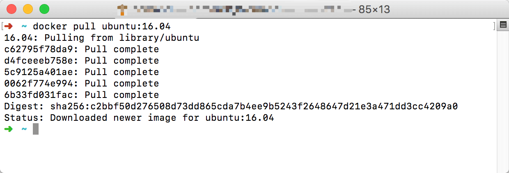
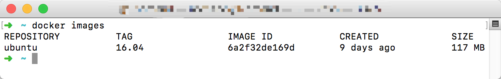

如何创建一个Node.js 的 Docker 开发环境
- Node.js Docker Cluster
✨✨✨You can Edit this Article on Github本文以构建一个 Node.js Docker应用 为目标写的一个教程。当前操作系统环境 Mac OSX Sierra 10.12.4
Docker介绍
Docker 是个划时代的开源项目，它彻底释放了计算虚拟化的威力，极大提高了应用的运行效率，降低了云计算资源供应的成本！ 使用 Docker，可以让应用的部署、测试和分发都变得前所未有的高效和轻松！
Docker引擎的基础是Linuxring器(Linux Containers，LXC)技术。这个并不是一个新生的概念，很早前已经出现，比如操作系统上的chroot工具、以及Solaris Containers和FreeBSD jail等等，虽然这个技术非常成熟，然而这些工具使用起来非常不方便。Docker的出现解决了这些问题。
Docker容器虚拟化有很多好处：
- 更高效的利用系统资源：由于容器不需要进行硬件虚拟以及运行完整操作系统等额外开销，Docker 对系统资源的利用率更高。
- 更快速的启动时间，Docker容器应用启动时间很快
- 一致的运行环境和环境隔离
- 持续交付和部署
- 更轻松的迁移服务
既然Docker这么好，我们来试试如何跑一个Node.js Docker应用。
安装Docker
使用Docker之前，我们需要安装。Docker支持在主流操作平台上使用：包括Ubuntu、CenterOS、Windows已经MacOS系统。
Ubuntu
在Ubuntu上安装Docker可以直接使用以下shell script
// 最新的Docker安装需要先移除老的Docker
sudo apt-get remove docker docker-engine
sudo apt-get update
sudo curl -sSL https://get.docker.com/ | sh
Windows
Windows 上我们可以直接下载 Docker GUI
Mac OSX
Mac OSX 上我们也可以直接下载 Docker GUI。
Docker的主要目标是Build ship and run any app,any where.主要生命周期有：封装（Packaging）、分发（Distribution）、部署（Deployment）、运行（Runtime）等。
Docker具有三大核心概念：
仓库（Repository）
镜像（Image）
容器 （Container）
本篇教程会按照这三大核心概念来展开，中间当然会穿插一些其他Docker方面的内容：Dockerfile、docker-compose
仓库
Docker仓库类似于代码库，是存放Docker镜像文件的统一地方。分为公开仓库和私人仓库。目前最大的国内仓库是 Docker hub。但是这个仓库由于国内墙的原因pull一个镜像的时候会很慢，所以可以把Docker的仓库地址设置为国内，我们可以打开 Docker preferences 来设置 registry mirrors，我们这里可以设置为国内的 daocloud提供的仓库地址。设置完之后记得重启Docker，然后我们就可以安装我们需要的镜像了。

镜像
Docker镜像类似于虚拟机镜像，一个镜像可以只包含一个完整的Ubuntu操作系统环境。Docker提供了一套十分简单的机制来进行创建和更新现有镜像，甚至可以从网上下载第三方已经做好的镜像，当然也可以自己build一个自定义的镜像发布到仓库当中。
再次提醒：我们当前教程最终的目的是创建一个 Node.js环境的Docker容器，当前操作系统环境 Mac OSX Sierra 10.12.4
docker pull NAME[:TAG]
Docker下载镜像的命令格式为：
docker pull NAME[:TAG]
对于Docker来说，如果不显式的指定TAG（也可以理解为镜像版本），则默认会选择latest来作为标签：即下载仓库最新版本的镜像。
我们需要先安装一个稳定的Ubuntu镜像，在这里我选择了16.04版本的镜像：
docker pull ubuntu:16.04
执行结果如下图：
docker iamges
接下来我们可以列出本地主机上已经存在的镜像，通过以下命令可以看到我们刚才已经安装过的Ubuntu系统：
docker iamges
执行结果如下图：

从列出信息中，我们可以看到很多有用的内容，依次为：
- 来自于哪个仓库（REPOSITORY）
- 镜像的标签信息（TAG）
- 镜像的唯一id号（IMAGE ID）
- 创建时间（REACTED）
- 镜像大小（SIZE）
其中镜像的唯一id号（IMAGE ID）十分重要，它唯一标识了该镜像。
docker inspect IMAGE_ID
我们可以通过以下命令来查看指定 IMAGE_ID 镜像的详细信息，这里不再列出执行结果。
docker inspect IMAGE_ID
docker search NAME
如果我们准备获取镜像的时候并不知道这个镜像是否在远程仓库当中是否存在，我们可以通过下面命令来搜索，该条支持很多参数，这里不再列出，请自行查看文档，默认输出结果安装星级评价排序。
docker search NAME
docker rmi IMAGE[IMAGE…]
我们可以使用镜像的唯一标签来删除镜像，常用的参数是--force, -f来指定是否强制删除镜像。其他参数这里不再列出，请自行查看文档：
docker rmi IMAGE[IMAGE...]
创建镜像
至此，Docker Image 常用的命令已经罗列完毕，其他更多命令请自行参阅文档。
接下来我们需要来创建我们需要的Node.js镜像。常用创建镜像的方式有三种：
- 基于已有镜像创建
该方法使用下面命令创建，由于这个方法是在已有镜像的基础上创建的镜像，但是我们这里需要自定义创建镜像，所以不采用该方式创建，请自行查看文档：
docker commit [OPTIONS] CONTAINER [REPOSITORY[:TAG]]
- 基于本地模板导入
可以直接通过一个操作系统模板来创建镜像。我们依旧不采用，请自行查看文档
- 基于Dockerfile创建
Dockerfile 是一个文本格式的配置文件，用户可以使用它来快速创建自定义的镜像，刚好符合我们的要求。在下面有详细介绍和使用教程。
容器
Dockerfile
Dockerfile 是一个文本格式的配置文件，用户可以使用它来快速创建自定义的镜像。
Dockerfile 由一条条命令语句组成，并且支持以#开头的注释行。
一般来说，Dockerfile分为四个部分：
- 基础镜像信息
- 维护者信息
- 镜像操作指令
- 容器启动时的执行命令
接下来介绍一下Dockerfile的执行指令，一般格式为 INSTRUCTION arguments。
这些指令在我们来完成我们的目标：Node.js Docker应用 都会用到，更多的请自行查看文档。我们需要用到的执行指令包括以下内容:
FROM
格式为：FROM
第一条指令必须为FROM指令，如果在一个Dockerfile当中创建多个镜像，可以使用多个FROM。ßß
MAINTAINER
格式为：MAINTAINER
RUN
格式为：RUN
区别是：前者将在shell终端中执行，也就是/bin/sh -c；后者则使用exec执行。
当命令过长的时候可以使用\来换行。
CMD
格式为：CMD command param1 param2 或者 CMD [“executable”,“param1”,“param2”]
区别是：前者将在shell终端中执行，也就是/bin/sh -c；后者则使用exec执行。
每个Dockerfile只能有一条CMD命令，如果指定多个，只有最后一个执行。
EXPOSE
格式为：EXPOSE
告诉Docker服务器容器暴露的端口号来进行容器和本地主机端口映射。启动容器的时候通过-p可以具体指定端口
ENV
格式为：ENV
ADD
格式为：ADD
该命令指定复制本地主机当中的src到容器当中的dest。其中src可以是相对路径、url、tar。
COPY
格式为：COPY
该命令指定复制本地主机当中的src到容器当中的dest。目标路径不存在的时候自动创建
VOLUME
格式为：VOLUME [“/data”]
创建一个可以从本地主机或者其他容器挂载的挂载点，一般来存储数据库或者需要保持链接的数据等。
WORKDIR
格式为：WORKDIR
定义当前容器的工作目录。
使用多次WORKDIR命令，如果参数是相对路径，则会何必每次的相对路径。
接下来我们正式创建Node.js container
Node.js Dockerfile
终于到了我们来编写Dockerfile来创建 Node.js container 的时候了！
在正式开始之前，我们先梳理一下任务要点：
- 安装最新版本的Node.js（这里不选择stable版本）
- 从GitHub上下载我们的服务器代码（这里的例子采用本地服务器server.js，当然也会有GitHub的例子）
- 启动服务器并抛出端口
下面正式开始，开始之前需要自行创建一个Dockerfile文件并且在相同文件目录下写入一个server.js来作为我们的本地例子，server.js可以参考：
'use strict'
const http = require('http')
const port = 3000
const server = http.createServer((req, res) => {
res.end('hello world')
})
server.listen(3000, () => {
process.stdout.write(`server start success on port ${port}`)
})
上面server只是做一个简单的hello world例子 :smile:
首先指定我们的基础镜像信息，这里我们选择ubuntu:16.04来作为基础镜像，并写好维护者信息。
# Docker file 文件头
FROM ubuntu:16.04
MAINTAINER Nomand <iamnomand@gmail.com>
然后设置本地语言，这个不是必要操作：
# 非必须操作
RUN locale-gen en_US.UTF-8
ENV LANG en_US.UTF-8
ENV LC_ALL en_US.UTF-8
由于国内的原因，我们需要设定阿里云的镜像来作为Ubuntu的更新镜像：
# 设置 Ubuntu 镜像源地址
RUN sed -i 's/http:\/\/archive\.ubuntu\.com\/ubuntu\//http:\/\/mirrors\.aliyun\.com\/ubuntu\//g' /etc/apt/sources.list
而且你也有可能需要设置一下代理：
# RUN export http_proxy=xxxxx
# RUN export https_proxy=$http_proxy
接下来更新系统内核：
RUN apt-get update
上面一些步骤都是为了接下来安装Node.js做的必要操作，做完这些之后方可继续下一步。
接下来继续安装一些需要用到的包：
# 更新系统并且安装需要的包
RUN apt-get install -y -q --no-install-recommends \
apt-transport-https \
build-essential \
ca-certificates \
curl \
g++ \
gcc \
git \
make \
sudo \
wget \
vim \
&& rm -rf /var/lib/apt/lists/* \
&& apt-get -y autoclean
正式开始安装Node.js，我们选择安装7.X版本。
我们选择官方的Binary Distributions提供的bash文件来进行安装，这样可以省下来很多不必要的操作：
# 可以通过 echo 来输出当前信息
RUN echo '正在安装 nodejs'
ENV NODE_VERSION=7
RUN curl -o- https://deb.nodesource.com/setup_$NODE_VERSION.x | bash -
RUN sudo apt-get install -y nodejs
安装好了依赖和主程序，我们接下来需要配置我们的容器工作目录了，也就是WORKDIR
# 这里我们先简单指定 /home/hello 为我们的工作目录
ENV WORK_DIR=/home/hello
RUN mkdir -p $WORK_DIR
WORKDIR $WORK_DIR
然后接下来我们需要把server.js拷贝到容器当中，如果是从GitHub上的例子，直接可以git clone xxx:
# 复制 server.js
COPY ./server.js $WORK_DIR/server.js
在启动服务器之前， 我们可以选择安装pm2来管理我们的node程序：
# 国内环境可以带上 registry
RUN sudo npm install pm2 -g -d --registry https://registry.npm.taobao.org
最后直接启动我们的服务，这里请注意，Docker不支持以daemon方式启动的任何服务:
# 启动服务
# RUN unset http_proxy
# RUN unset https_proxy
CMD ["pm2","start","server.js"]
EXPOSE 3000
然后执行shell script：
docker build - < Dockerfile
下面附上完整的Dockerfile:
# Docker file 文件头
FROM ubuntu:16.04
MAINTAINER Nomand <iamnomand@gmail.com>
# 非必须操作
RUN locale-gen en_US.UTF-8
ENV LANG en_US.UTF-8
ENV LC_ALL en_US.UTF-8
# 设置 Ubuntu 镜像源地址
RUN sed -i 's/http:\/\/archive\.ubuntu\.com\/ubuntu\//http:\/\/mirrors\.aliyun\.com\/ubuntu\//g' /etc/apt/sources.list
# RUN export http_proxy=xxxxx
# RUN export https_proxy=$http_proxy
# 更新系统并且安装需要的包
RUN apt-get install -y -q --no-install-recommends \
apt-transport-https \
build-essential \
ca-certificates \
curl \
g++ \
gcc \
git \
make \
sudo \
wget \
vim \
&& rm -rf /var/lib/apt/lists/* \
&& apt-get -y autoclean
# 可以通过 echo 来输出当前信息
RUN echo '正在安装 nodejs'
ENV NODE_VERSION=7
RUN curl -o- https://deb.nodesource.com/setup_$NODE_VERSION.x | bash -
RUN sudo apt-get install -y nodejs
# 这里我们先简单指定 /home/hello 为我们的工作目录
ENV WORK_DIR=/home/hello
RUN mkdir -p $WORK_DIR
WORKDIR $WORK_DIR
# 复制 server.js
COPY ./server.js $WORK_DIR/server.js
# 国内环境可以带上 registry
RUN sudo npm install pm2 -g -d --registry https://registry.npm.taobao.org
# 启动服务
# RUN unset http_proxy
# RUN unset https_proxy
CMD ["pm2","start","server.js"]
EXPOSE 3000
Docker-compose
Docker-compose是一个非常有用的官方项目，它的作用是：负责快速在集群中部署分布式应用
我们知道使用一个 Dockerfile 模板文件，可以让用户很方便的定义一个单独的应用容器。然而，在日常工作中，经常会碰到需要多个容器相互配合来完成某项任务的情况。例如要实现一个 Web 项目，除了 Web 服务容器本身，往往还需要再加上后端的数据库服务容器，甚至还包括负载均衡容器等。
它允许用户通过一个单独的 docker-compose.yml 模板文件（YAML 格式）来定义一组相关联的应用容器为一个项目（project）。
Compose 项目由 Python 编写，实现上调用了 Docker 服务提供的 API 来对容器进行管理
安装 Docker-compose
在Mac OSX 系统上安装完Docker以后默认自带了Compose，在Linux系统上需要手动安装：
sudo curl -o /usr/local/bin/docker-compose -L "https://github.com/docker/compose/releases/download/1.11.2/docker-compose-$(uname -s)-$(uname -m)"
sudo chmod +x /usr/local/bin/docker-compose
安装的过程当中有可能会安装所需的其他依赖，比如Python
编写yml
安装完后，我们就可以来以上面的简单的Node.js应用为例，去编写docker-compose.yml，更方面的编排我们的Docker应用了。
首先在原来的目录下面新建一个命名为docker-compose.yml的文件。
开始编写之前，有两个关于docker-compose的术语需要了解：
- service：一个应用容器，实际上可以运行多个相同镜像的实例。
- project：由一组关联的应用容器组成的一个完整业务单元。
刚开始的docker-compose像下面这样：
version: '2'
我们在这里指定compose file 的版本为2，来告诉解析器如何解析。
版本这里不深入，对应的版本信息可以在这里找到：版本信息
接下来就要开始配置我们的services：
services:
workspace:
build:
context: .
container_name: docker_work_space
ports:
- "3000:3000"
tty: true
然后执行下面命令就可以跑起我们第一个 docker 集群了。
docker-compose up --build